Ideation
Prototyping
Testing
Funding
Launching
-

Brown EP
The Brown Entrepreneurship Program is the student-run entrepreneurship initiative on campus. We ignite the entrepreneurial community of College Hill through tailored programming and resources to help students create change.
Learn More -
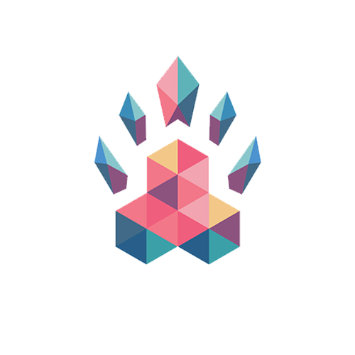
Hack@Brown
Hack@Brown is a weekend full of learning new technologies, making great friends, and pushing your limits. Everyone is welcome. Whether you’re making your first website, hardware hacking with an Arduino, or starting with design, Hack@Brown is for you.
Learn More -
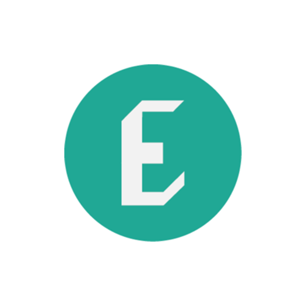
RISD E'Ship
E'Ship is the student-run hub of entrepreneurial activity at RISD. We translate creative talent into tangible projects that foster impact in and beyond the RISD community.
Learn More
-

Startup@Brown
Startup@Brown is a weekend-long conference at Brown University that brings together innovative startups and talented students. Come to learn about startups and their stories through workshops and conversations. Leave with a new perspective and your next summer internship or full-time job.
Learn More
-
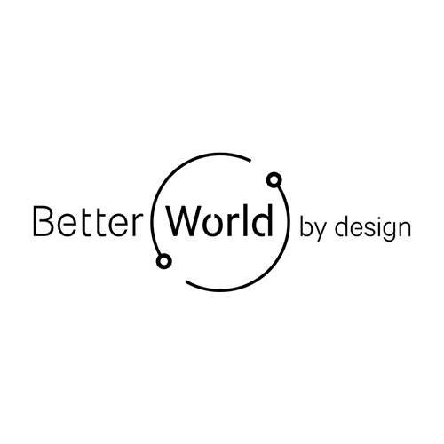
A Better World by Design
Better World by Design is a student-led initiative at Brown University and Rhode Island School of Design that facilitates collaboration between designers, educators, innovators, and students in an annual three-day conference.
Learn More -
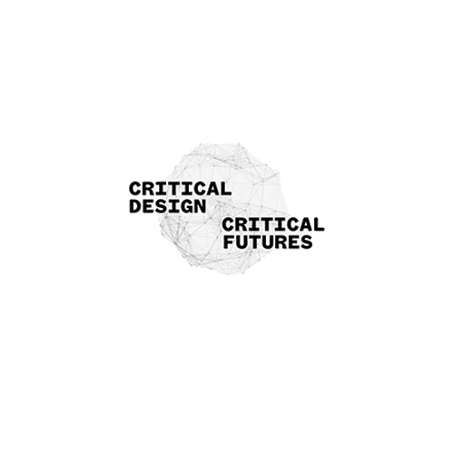
Critical Design | Critical Futures
How are contemporary designers envisaging modes of design that are critical, future directed and challenge the status quo? We explore the different ways in which forms of critical design are now being conceptualized and enacted.
Learn More -
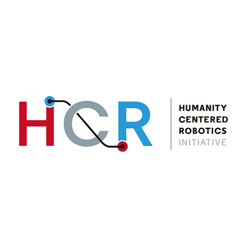
Humanity Centered Robotics
We are a group of Brown University faculty, students, and affiliates dedicated to robotics as a means to tackle the problems the world faces today. Our research ultimately aims to help create and understand robots that coexist harmoniously with humans.
Learn More -
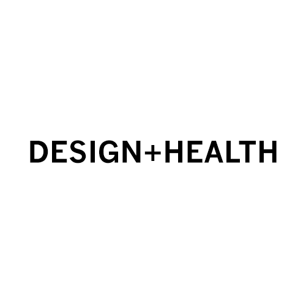
Design+Health
Design+Health is a student-led collaboration between the Warren Alpert Medical School of Brown University and the Rhode Island School of Design. We leverage design thinking to tackle the complex challenges facing the world of medicine.
Learn More -
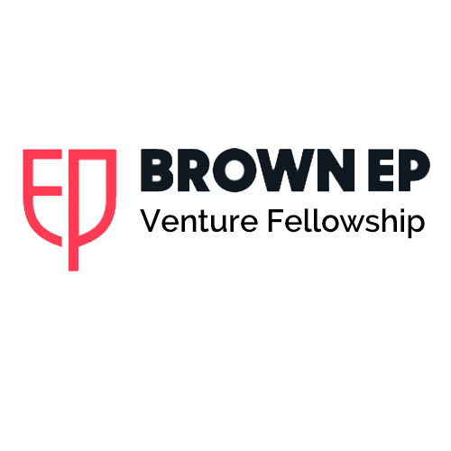
Brown Venture Fellowship
BVF is a year-long program that accelerates Brown's top commercial and technical student entrepreneurs through skills training, funding, the collective intelligence of the community, and complementary coursework.
Learn More -
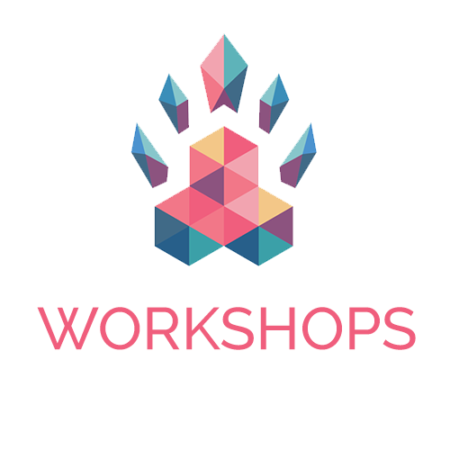
Hack@Brown Workshops
Come with your friends and learn animation, how to make a website, an iOS game, and more! There are always cookies.
Learn More -
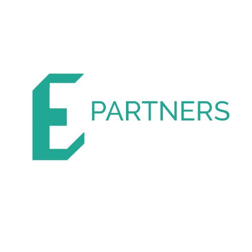
E'Ship E Partners
E Partners are supported with seed funding, mentorship from faculty and local entrepreneurs, and access to the E'Ship co-working space.
Learn More -
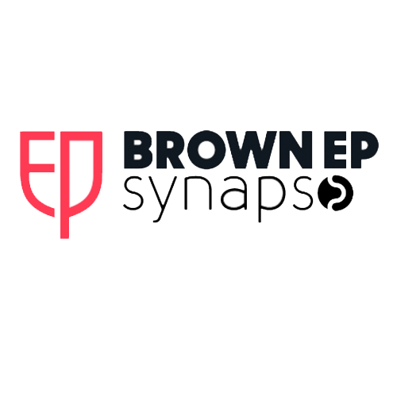
Synapse
Synapse brings 20 of Brown's and RISD's most exceptional engineers, designers, and aspiring entrepreneurs to visit an array of companies and build essential bridges with successful alumni entrepreneurs during their summer internships in San Francisco.
Learn More -
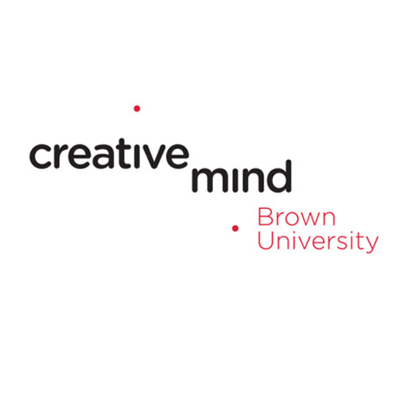
Brown creative mind
The courses, programs, and conversations of the Creative Mind Initiative explore the roots of creative thinking and dissolve disciplinary boundaries in search of new modes of teaching and learning.
Learn More -
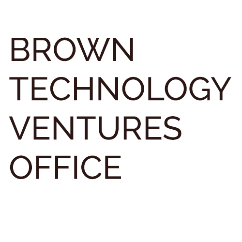
Brown Technology Ventures Office
The Technology Ventures Office (TVO) works with faculty to commercialize inventions created from research at Brown. Brown's VTO fosters strategic collaborations with industry through licensing, sponsored research, and launching of new ventures.
Learn More -
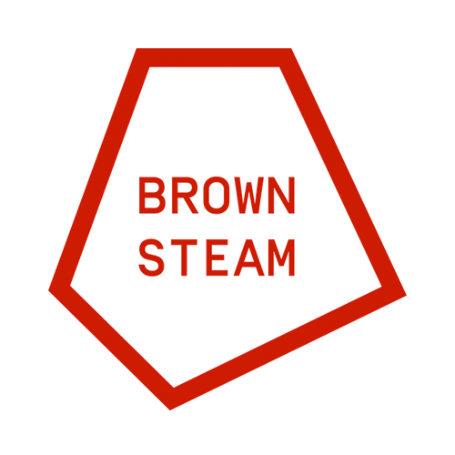
Brown STEAM
The mentality of Brown STEAM student-group hinges upon the ability to draw astute connections between disciplines. We strive to integrate the creativity and aesthetics of the arts; the problem solving tools and rigor of the STEM fields; and the critical thinking and ethical considerations of the humanities.
Learn More -
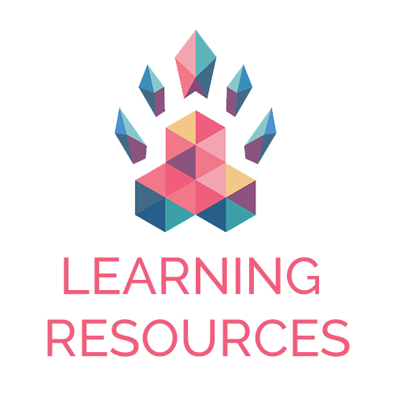
Hack@Brown Learning Resources
A list of resources, ideas, and tutorials to jumpstart your web projects! Learning never ends.
Learn As If You'll Live Forever -
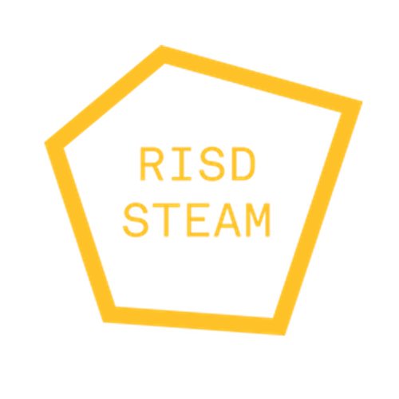
RISD STEAM
The first student-run organization part of the national movement to include Art & Design in STEM. Through our programs and events, we aim to inspire a generation of creative problem solvers. We believe multidisciplinary working & learning will empower teams in an increasingly connected world.
Learn More -
Engaged Scholars Program
The Engaged Scholars Program (ESP) supports students and faculty who seek to integrate teaching, research, and practice in order to advance scholarship and benefit the world beyond Brown.
Learn More -
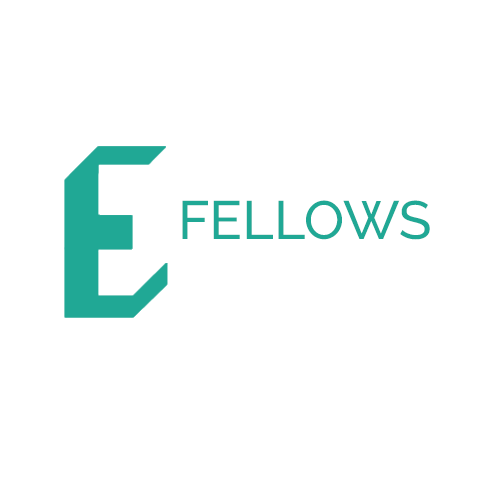
E'Ship E Fellows
E Fellows have made significant strides toward developing a creative venture, and have been selected by E'Ship and RISD's Career Center to receive a grant of $1,000 to advance their work.
Learn More -
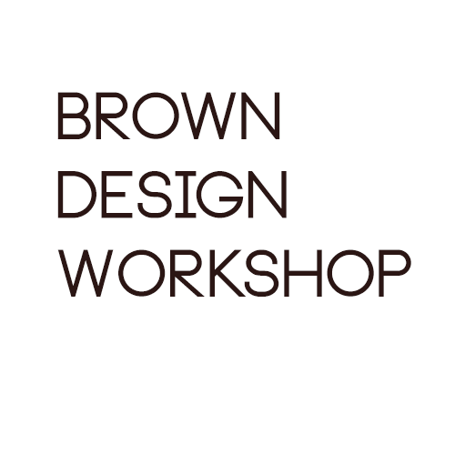
Brown Design Workshop
Space on campus designed to provide a collaborative and creative environment for project-based learning. Open to all of Brown and RISD, the space houses a new set of rapid prototyping equipment, allowing students to bridge the gap between theory and practice.
Learn More -
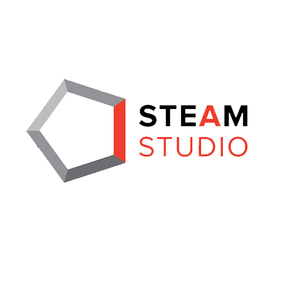
STEAMstudio
STEAMstudio is an experimental, project-based course designed and taught collaboratively by students and faculty at Brown and RISD. These projects are designed to serve as an introduction to iterative design processes and creative practice.
Learn More -
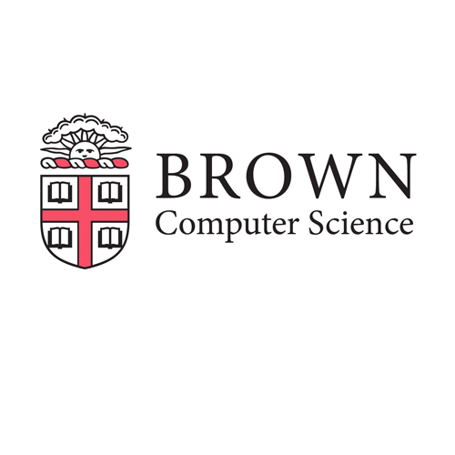
Brown Computer Science
Since its inception in 1979, the Computer Science Department at Brown has forged a path of innovative information technology research and teaching at both the undergraduate and graduate levels.
Learn More -
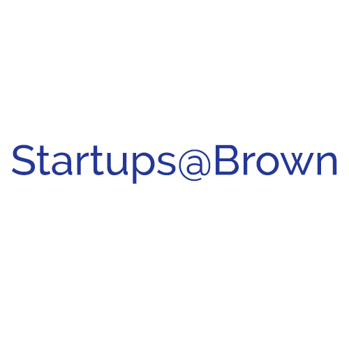
Startups@Brown
Startups@Brown is a Facebook group within Brown where students can collaborate, share resources, and support each other. It's a community where people that are working on their own projects/startups can come together.
Learn More -
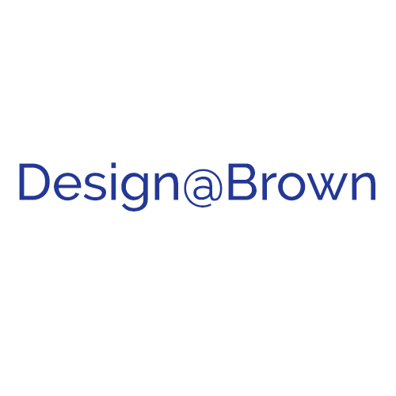
Design@Brown
Design@Brown is a Facebook group within Brown of people interested in design!
Learn More -
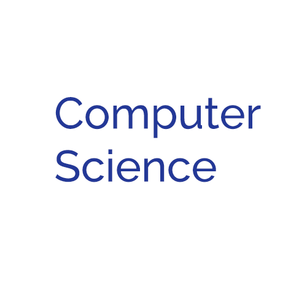
Computer Science
Computer Science is a Facebook group within Brown of people interested in Computer Science!
Learn More -
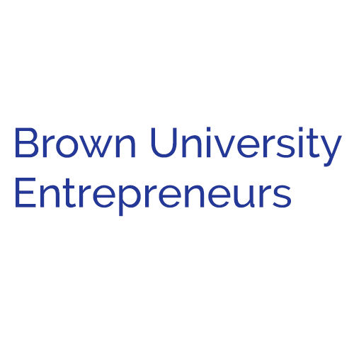
Brown University Entrepreneurs
Facebook group of entrepreneurs at Brown and anyone who likes innovating, creating and learning. It's a great place to share relevant resources, brainstorm & refine startup ideas, meet like-minded students, and learn.
Learn More -
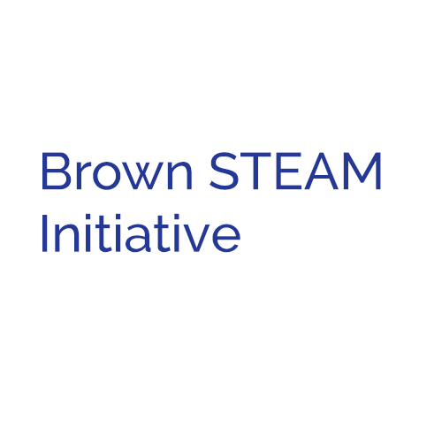
Brown STEAM Initiative
Facebook group within Brown of people interested in integrating Arts to Science, Technology, Engineering, and Math. The group functions as a common space for project ideation, collaboration, and development
Learn More